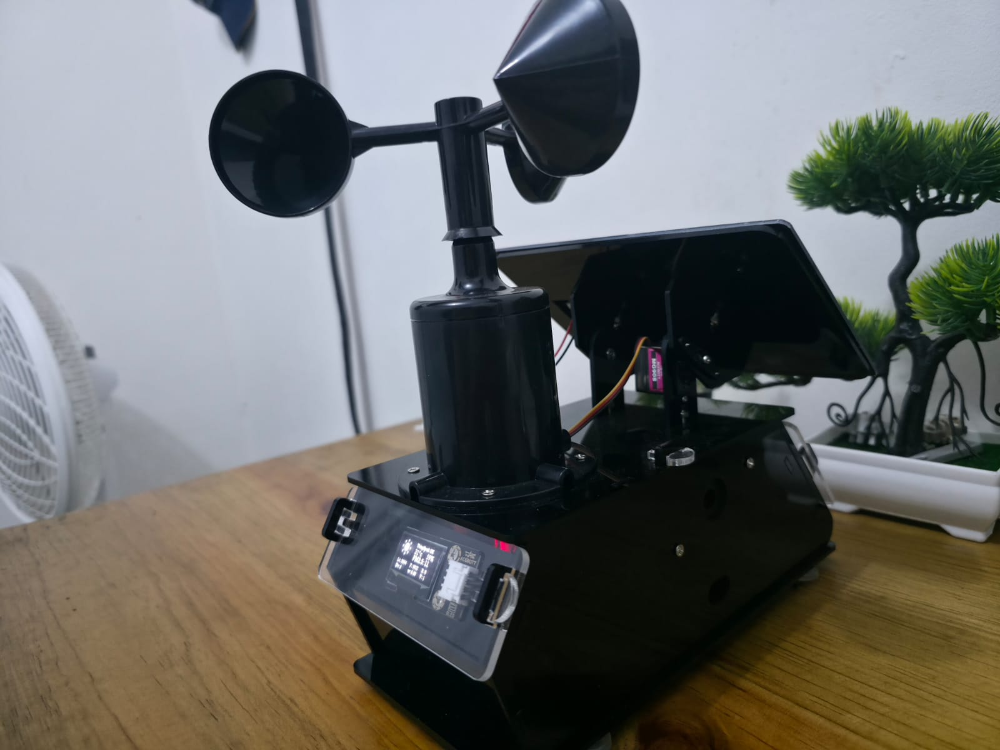
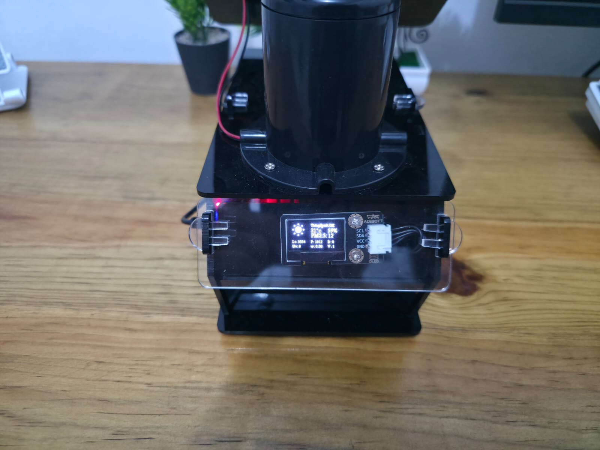
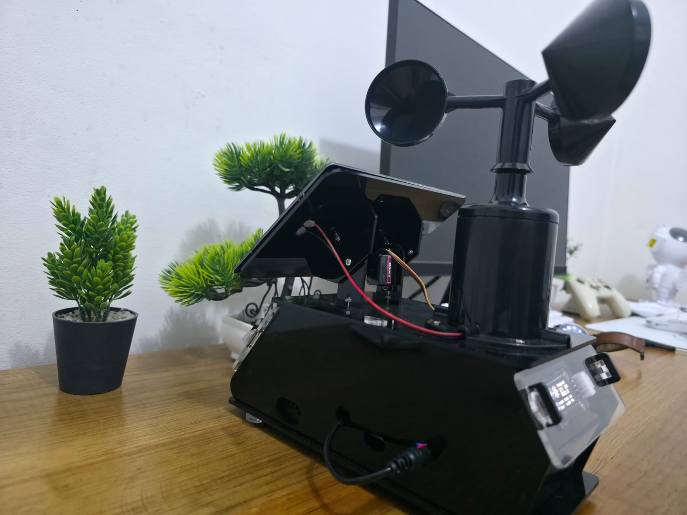
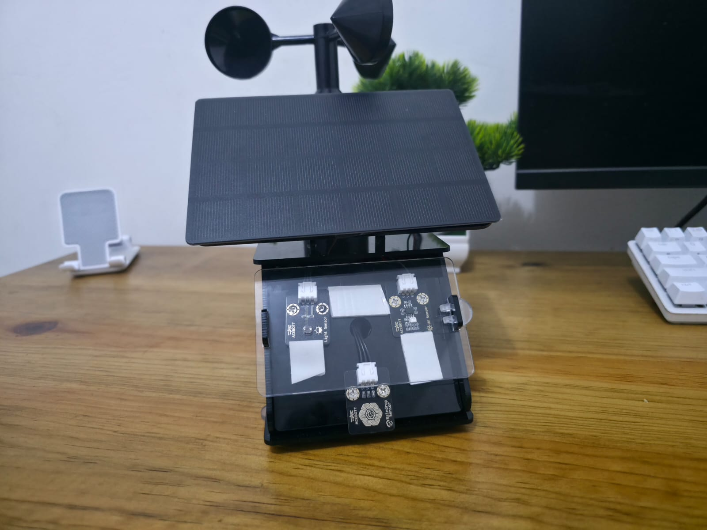
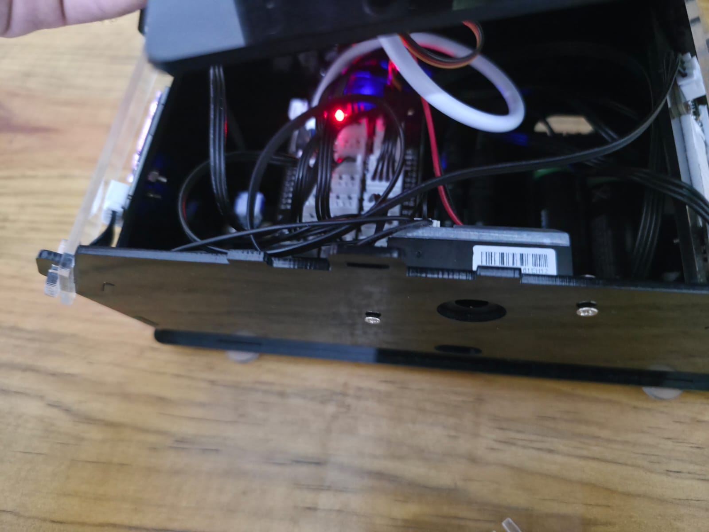

Instituto Experimental San José La Salle · Grupo Experimental San José · 12° Grado, Sección 2
Proyecto experimental de medición climática construido y monitoreado por estudiantes de duodécimo grado, con lecturas actualizadas en tiempo real.
Esta es una estación meteorológica experimental diseñada, ensamblada y puesta en marcha por un grupo de estudiantes de duodécimo grado del Instituto Experimental San José La Salle, como parte de su trabajo de ciencias experimentales.
El sistema captura variables ambientales en el sitio y las transmite a un canal público donde cualquiera puede seguir las lecturas conforme se registran.
Fotos del armado y los componentes del kit de estación meteorológica IoT usados en el proyecto.




